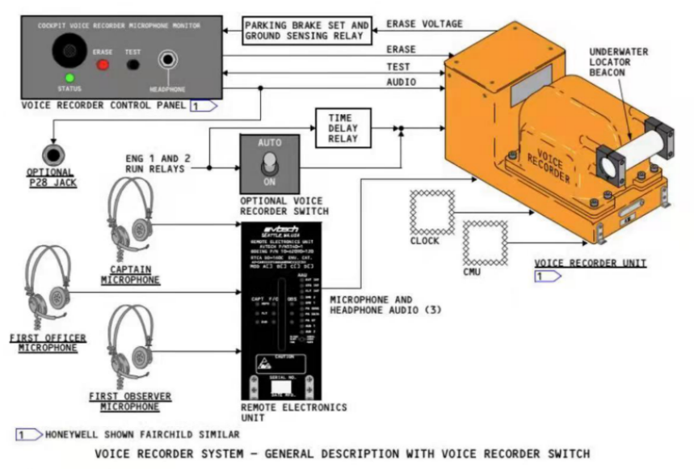

1 区域话筒
(按选型) 只要机上有115伏交流电即工作。
(按选型) 只要一台发动机工作或语音记录器电门位于ON时即工作。
2 删除（ERASE）电门（红色）
按压（2秒） – (按选型稍有不同)
• 删除所有四个频道的记录
• 监听指示器指针短时偏转
• 仅当飞机在地面上，且停留刹车刹住时才工作。
注意:在飞行中关断CVR或私自清除相关数据是违法行为!
3 测试（TEST）电门
按压 – 稍延迟一会后，若未探测到故障(按选型5秒钟)：(按选型稍有不同)
• 监听指示器升入绿区。
• 耳机插入耳机（HEADSET）插孔时可听到声响。
• 未松开电门之前，指示器仍将保持绿带并且声响延续。
• 状态（STATUS）灯闪烁一次。
4 话筒耳机（HEADSET）插孔
可将话筒耳机插入插孔，监听测试中的发送音频，或监听语音音频回放。
5 监听指示器
指针偏转表示：
• 正常操作中—系统录音
• 抹除中—消除四个通道上的所有记录
（大约有1秒钟延迟）
• 测试（TEST）中—指针升至绿区。
5 状态（STATUS）灯(按选型)
亮（瞬时绿色）—语音记录器测试时没有发现故障。
1 语音记录器（VOLCE RECORDER）电门
AUTO（自动） – 在第一台发动机起动到最后一台发动机关闭5分钟为驾驶舱语音记录器供电。
ON （开） – 在第一台发动机起动前为驾驶舱语音记录器供电，然后电门跳至AUTO位。

驾驶舱语音记录器
驾驶舱语音记录器使用4个独立的通道，记录120分钟/30分钟(按选型)驾驶舱内的音频记录。记录超过120分钟/30分钟后(按选型)将自动删除。一个通道记录使用驾驶舱区域话筒的会话。其它通道记录飞行员和观察员各自的ACP上输出（耳机）音频和发射信号。
因正常关闭或其他原因致使主电源断电后，驾驶舱语音记录器备用电源（RIPS）可继续向驾驶舱记录器（CVR）供电10分钟。
话音记录保存程序：（根据各公司政策略有不同）
1、大部分B737通电情况下CVR持续工作，机组应采取拔出跳开关（仅地面操作）的方式保护CVR资料，同时应该在《飞行技术状况记录本上》写明情况，以便机务维修人员完成飞机恢复运行前的工作。
2、B737机型驾驶舱话音记录器跳开关名称：
VOICE RCDR/RIPS，位置：P18-2 D6，
或名称VOICE RCDR，位置：P18-2 D7。